Article 01 · 2026.05.20 · addd.co.kr
국내유일 합법 광고트럭, 시티핑크 강남 (City Pink Gangnam)
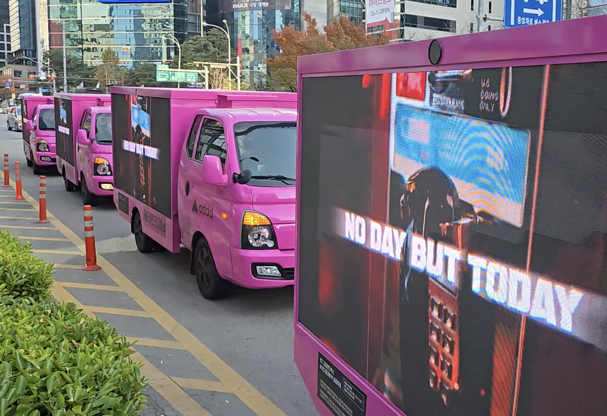
강남역과 신논현역 근처에서 핑크트럭이 연이어 달리는 장면을 본 적 있으신가요? 바로 애드(addd)의 시티핑크 강남 광고 트럭입니다.
시티핑크는 강남역과 신논현역 일대를 기본 노선으로 하며, 3대가 연이어 주행하며 확실한 임팩트를 선사하는 이동형 DOOH 미디어입니다.
운영 시간 : 월-토 (11:30~20:00) / 일요일 미운행
규제샌드박스를 통해 국내에서 유일한 합법 광고 트럭을 운영하는 애드(addd)는 지난 25년부터 기존 광고트럭 달고T에서 핑크 컬러로 주목도를 더욱 높여 ‘시티핑크’라는 이름으로 새롭게 브랜딩하여 운영하고 있습니다.
이동형 DOOH 매체 미디어 시티핑크의 특징과 차별점에 대해 알려드리겠습니다.
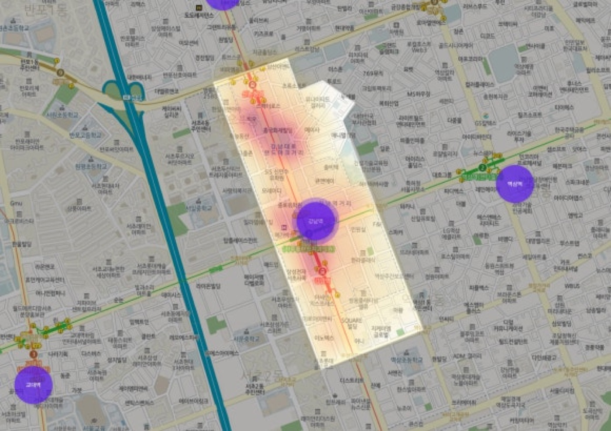
강남역 - 신논현역 일대 강남대로 랜드마크 거리 운행
시티핑크의 기본 노선은 강남역에서 신논현역 사이 강남대로입니다. 이 거리는 내국인뿐만 아니라 외국인 관광객들도 많이 찾는 곳으로 강남을 대표하는 랜드마크 거리로 불리기도 합니다.
성형외과, 매장, 식당, 영화관 등이 밀집되어 있어 방문객이 많고 관광객, 지하철 이용객, 직장인 등 다양한 유형의 유동인구가 모이는 곳입니다.
폭넓은 타깃층을 커버하는 만큼, 특정 브랜드나 품목에 국한되지 않고 다양한 업종의 광고 집행이 가능한 장소입니다.
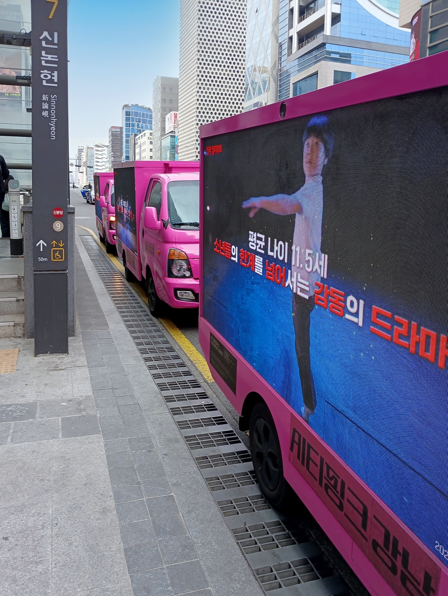
넓은 범위를 커버하는 이동형 커버리지 DOOH 매체
시티핑크의 대표적인 장점으로는 이동형 DOOH 미디어로서 넓은 범위의 지역에 광고 송출이 가능한 커버리지 매체라는 점과 증명할 수 있는 많은 노출인구 수와 높은 시청률입니다.
강남-신논현 구간에서 하루 8시간 운행 기준 일 3만 명 이상에게 노출되며, 평균 시청률 40% 이상으로 많은 사람들에게 광고가 도달합니다.
그렇다면, 시티핑크만의 높은 시청률 비결은 무엇일까요?
인도면을 따라 서행하여, 보행자의 시야에 자연스럽게 노출됩니다.
시티핑크는 인도면을 따라 시속 30km 이하로 서행합니다. 보행자 시야의 높이와 같고, 물리적 거리가 가깝기 때문에 시야에 자연스럽게 들어옵니다.
3대가 하나의 광고를 동시에 송출하는 파노라마 싱크플레이
시티핑크에는 여러 대가 하나의 광고를 동시에 송출하는 싱크플레이 기술이 적용되어 있습니다.
3대가 연속 주행하며 같은 광고를 반복 노출하기 때문에 메시지 전달력이 높고, 보행자와 운전자 모두의 시선을 자연스럽게 사로잡아 브랜드 호감도를 상승시키며, 장기기억으로의 전환율을 높입니다.
길에서 마주치면 시선이 갈 수밖에 없는 시티핑크의 파노라마 싱크플레이는 온라인 공유로 이어지는 바이럴 효과까지 기대할 수 있습니다.
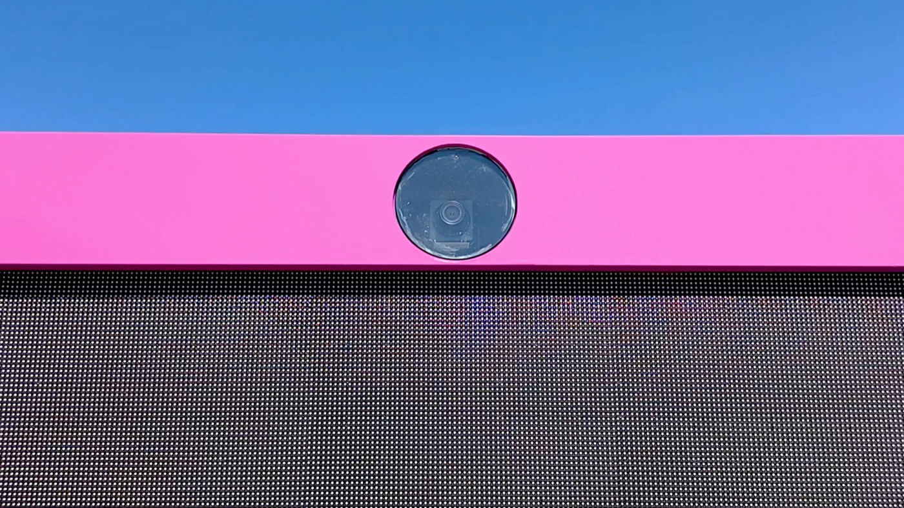
애드아이(addd-i)를 통한 광고 성과 데이터 분석을 제공합니다.
‘일 3만 명 이상 노출, 40% 이상의 시청률.’ 증명할 수 있는 이유는 무엇일까요?
시티핑크에는 옥외광고 성과 분석 솔루션 애드아이(addd-i)가 탑재되어 있기 때문입니다.
옥외광고 효과 지표 얼라이언스 공식 3단계 데이터 생산 기업 애드(addd)의 독자적인 Vision AI 기술을 통해 유효노출인구 수, 시청률, 주목률부터 광고를 시청한 사람들의 시청 시간, 성별, 연령 분석까지.
대시보드를 통해 광고 성과를 실시간으로 확인할 수 있으며. 광고 성과 데이터의 리포트까지 함께 제공해드리고 있습니다.
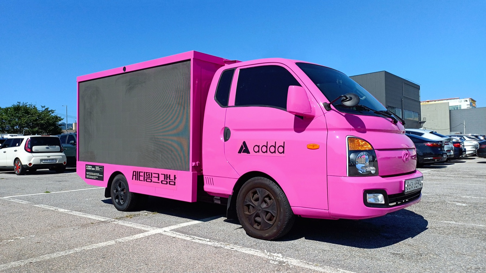
효율적인 예산과 1일 단위의 유연한 단기 운영 플랜
강남역은 유동인구가 많아 노출이 보장되는 만큼 광고 집행 비용도 높은 곳입니다.
그러나 국내유일 합법 광고트럭 시티핑크는 강남대로 타 미디어와 비교했을 때, 광고비는 80% 저렴하고 노출량은 240% 높아 효율적인 예산 운영이 가능합니다.
최근 단기 캠페인 수요가 늘어남에 따라 운영 방식도 대폭 유연화하여 1일 단위의 집행도 가능해진 시티핑크. 언제든 편하게 문의주세요!
Article 02 · 2026.08.14 · addd.co.kr
LED 트럭으로 만나는 미디어아트, 이동형 전시의 새로운 방식은?
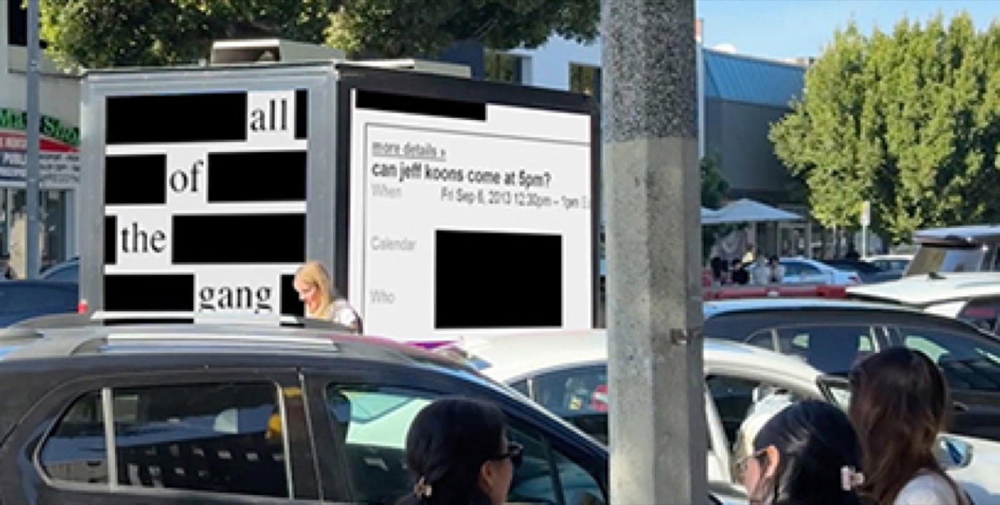
LED 트럭을 활용한 이동형 전시 해외사례 소개
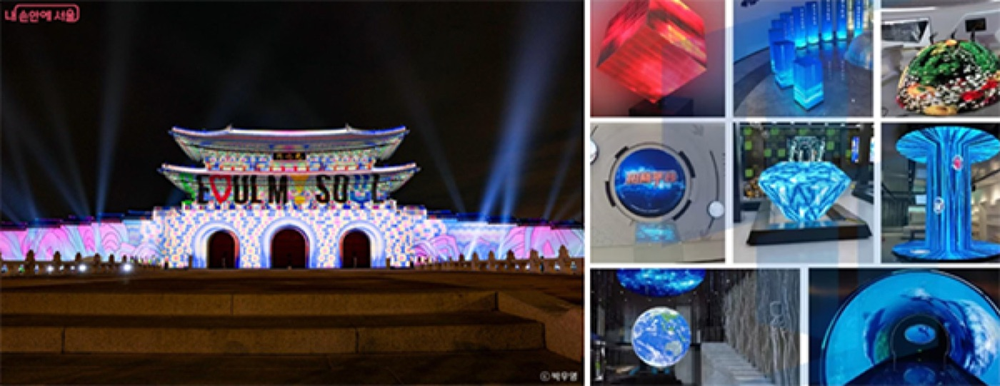
최근 미디어아트는 건물 외벽의 미디어 파사드부터 구형 조형물, 커브형 전광판, 기둥형 디스플레이까지 다양한 형태로 확장되고 있습니다.
하지만 대부분 한 장소에서 콘텐츠를 반복 재생하는 고정형 매체라는 공통점이 있는데요.
최근에는 미디어아트에 이동성과 현장성을 더해, 도시 곳곳의 관람객을 직접 찾아가는 새로운 전시 방식도 등장하고 있습니다.
미디어아트와 이동성을 결합한 시티핑크
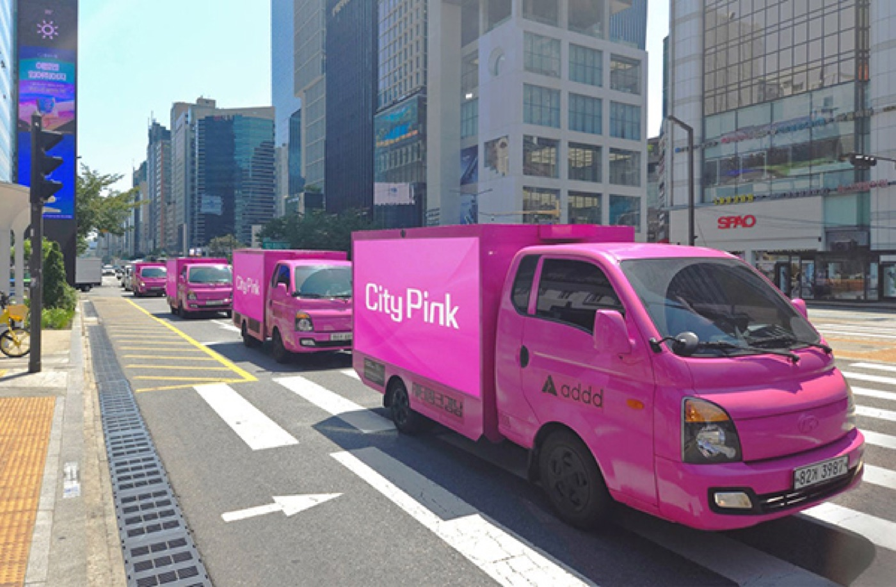
한편, 시티핑크는 일반적인 미디어아트 매체와 달리, 도시를 직접 이동하며 콘텐츠를 보여줄 수 있는 모바일 DOOH 매체입니다.
디지털 화면을 활용하면서도 원하는 지역과 동선을 따라 이동할 수 있기 때문에, 관람객이 전시장을 찾아오기를 기다리는 대신 콘텐츠가 사람들을 직접 찾아갈 수 있습니다.
특히 이동형 디지털 매체는 활용 가능한 종류가 많지 않은데요. 시티핑크는 규제샌드박스를 통해 합법적으로 운영되는 국내 유일 합법 광고트럭으로, 도심 주행과 콘텐츠 송출을 안정적으로 진행할 수 있습니다.
시티핑크의 가장 큰 장점은 ‘찾아가는 매체’라는 점입니다.
유동 인구가 많은 지역을 순회하며 반복적으로 콘텐츠를 노출할 수 있고, 이동하는 대형 LED 화면 자체가 주변의 시선을 끌기 때문에 고정형 전광판과는 다른 현장감과 주목도를 만들 수 있습니다.
또한 미디어아트의 내용과 관련된 장소를 직접 찾아가는 방식으로도 활용할 수 있습니다. 지역의 문화와 역사를 다룬 작품은 해당 지역을 순회하고, 환경을 주제로 한 작품은 강변이나 관련 장소를 찾아가는 등 콘텐츠와 실제 공간을 연결하는 전시가 가능합니다.
이처럼 미디어아트에 이동성을 더하면 단순히 영상을 재생하는 것을 넘어, 도시 곳곳에서 사람들과 작품이 만나는 하나의 경험을 만들 수 있습니다.
그렇다면 해외에서는 LED 트럭을 미디어아트와 전시에 어떻게 활용하고 있을까요?
해외 사례 1
K Contemporary 갤러리의 《#ArtFindsUs》
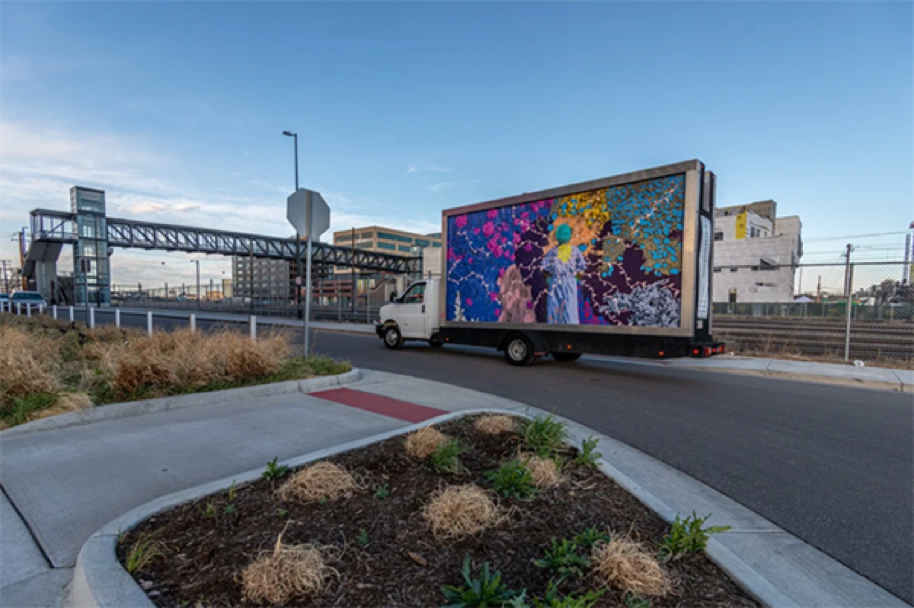
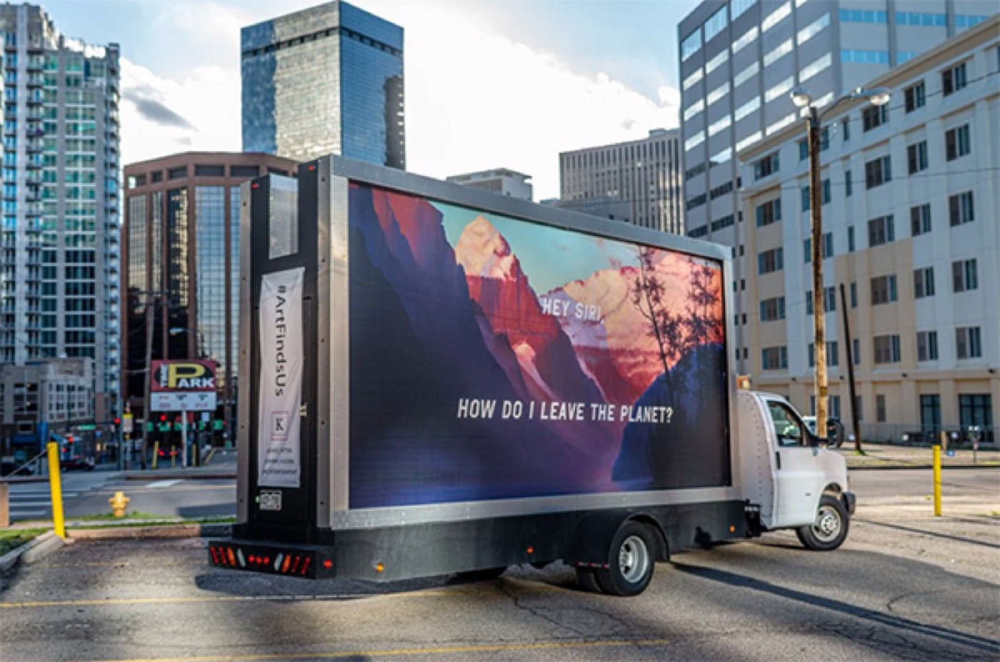
코로나19로 미술관 방문이 어려워지자, K Contemporary 갤러리는 대형 광고트럭에 현대미술 작품을 싣고 덴버와 볼더 지역을 순회했습니다. 관람객이 전시장을 찾아가는 대신, 작품이 지역 주민들의 일상으로 직접 찾아간 것입니다.
트럭 양쪽 면에는 숀 허킨스와 데이지 패튼 작가의 작품이 전시되었습니다. 미리 정해진 경로를 따라 이동하는 트럭 자체가 하나의 전시 공간이 되어, 더 많은 사람이 일상 속에서 자연스럽게 현대미술을 접할 수 있도록 했습니다.
이 사례는 LED 화면을 활용한 사례는 아니지만, 트럭의 이동성을 살려 도시 곳곳을 이동하며 미술 작품을 선보이는 기획으로 예상하지 못한 장소에서 작품을 만나는 특별한 경험을 만들어낸 케이스입니다.
해외 사례 2
워싱턴 D.C.를 순회한 《I’ll Meet You There》
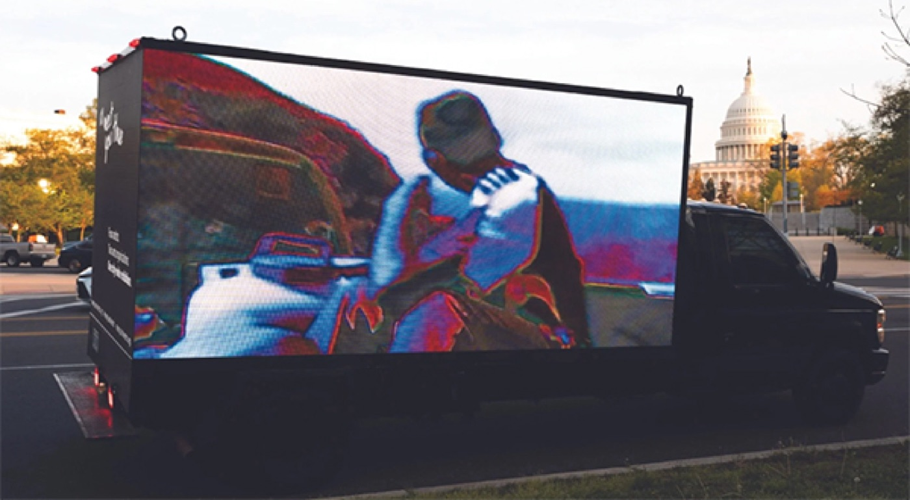
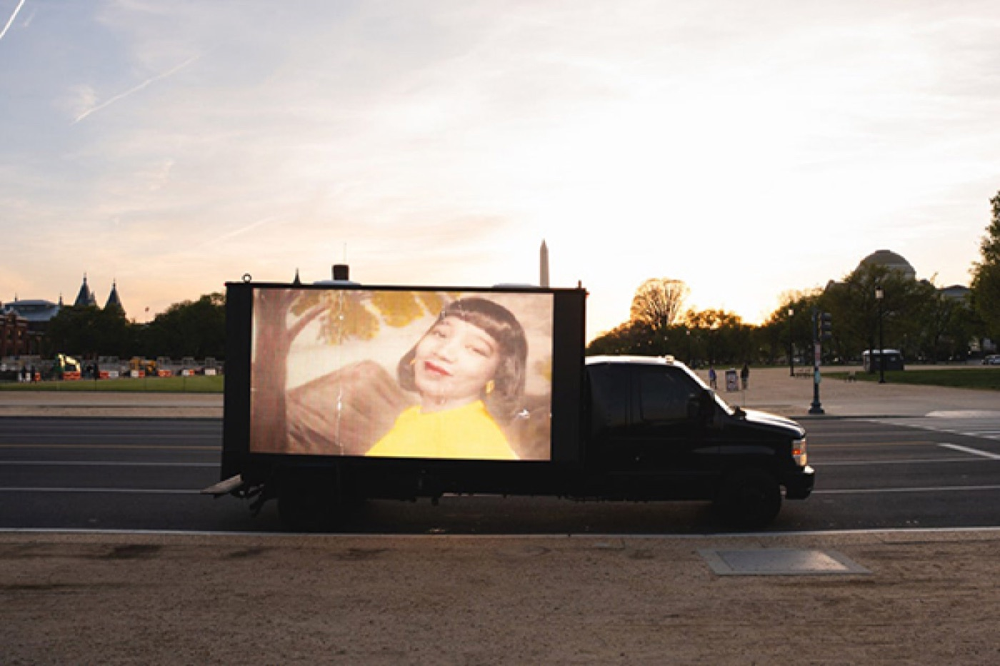
해밀턴 아티스트와 니콜슨 프로젝트는 약 6개월 동안 워싱턴 D.C. 전역에서 《I’ll Meet You There》를 선보였습니다.
신체성, 정체성, 이주, 기억, 공동체적 돌봄을 다룬 영상 작품을 갤러리와 LED 광고트럭에서 상영했습니다. 트럭은 매주 도시의 여러 지역을 순회하며 작가가 선정한 장소와 도서관, 지역 단체 앞에 정차해 상영회와 공개 토론을 진행했습니다. 사람과 기억이 도시 안에서 어떻게 이동하고, 각 지역의 역사와 공동체가 어떻게 연결되는지를 다룬 작품의 주제를 전시 방식에도 그대로 반영한 것입니다.
이 프로젝트는 LED 트럭을 단순한 영상 송출 수단이 아니라, 서로 떨어진 전시 공간과 지역사회를 연결하는 이동형 문화 공간으로 활용했다는 점에서 의미가 있습니다.
해외 사례 3
사회적인 질문을 던진 공공미술 프로젝트 《All of the Gang》
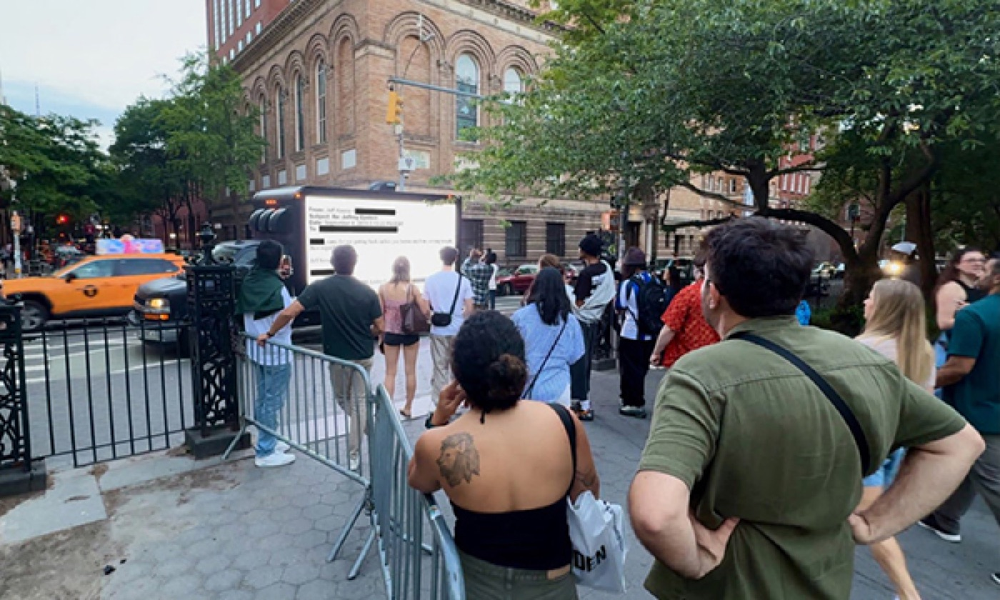
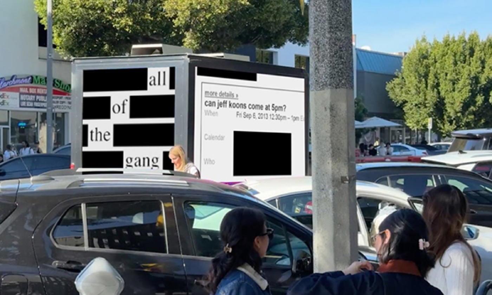
작가 Tod Lippy는 뉴욕 아트 위크 기간에 LED 트럭을 운행하며 이메일 자료로 구성된 영상 작품 《All of the Gang》을 상영했습니다.
이 작품은 제프리 엡스타인과 현대미술계 인물들의 관계를 보여주는 이메일 기록을 통해 미술계 내부의 권력과 연결망에 관한 질문을 던졌습니다.
트럭은 소호와 트라이베카, 그리니치 빌리지 등 갤러리와 미술 관계자들이 밀집한 지역을 직접 순회했습니다. 작품이 다루는 미술계의 관계와 구조를 실제 미술 현장 안에서 보여주며, 작품의 내용과 이동 경로를 연결한 것입니다. 작품과 관련된 장소를 직접 찾아가 관람객에게 메시지를 노출하고, 도시의 거리에서 사회적인 질문을 던지는 이동형 공공미술 사례입니다.
해외 사례 4
대량 수감 문제를 다룬 《8×5 Houston》
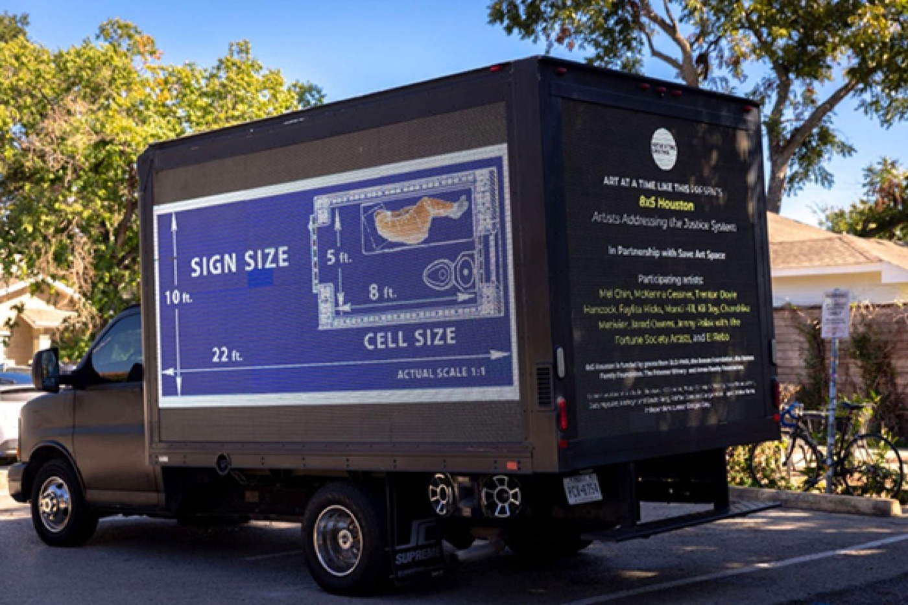
《8×5 Houston》은 수감 경험이 있는 작가를 포함한 10명의 작품을 통해 대량 수감 문제를 실제 감옥이 위치한 도시 공간 안에서 보여주며, 작품의 주제와 이동 경로를 연결한 공공미술 프로젝트입니다. 처음에는 고정형 광고판에 작품을 전시할 예정이었지만, 매체사들이 게재를 거부하면서 두 대의 디지털 광고트럭을 활용하게 되었습니다.
트럭에 송출된 멜 친의 《Actual Size》는 대형 광고면 안에 평균적인 감방의 크기인 5×8피트 공간을 실제 비율로 표현한 작품입니다. 침상과 변기만 놓인 좁은 공간을 광고면의 전체 크기와 비교해 보여줌으로써, 수감자의 생활 환경을 관람객이 직관적으로 체감하도록 했습니다.
트럭은 미술관과 아트센터 앞에 정차하는 동시에, 작품이 다루는 문제와 직접 관련된 Harris County Jail 주변을 순환했습니다.
이 프로젝트는 디지털 광고트럭을 단순한 작품 송출 수단이 아니라 사회문제가 존재하는 현장으로 직접 찾아가는 매체로 활용한 것으로 방금 전 3번 사례와 유사한 부분이 있어 보입니다.
해외 사례 5
Ariadna Arnés의 NFT.NYC 2025 프로젝트
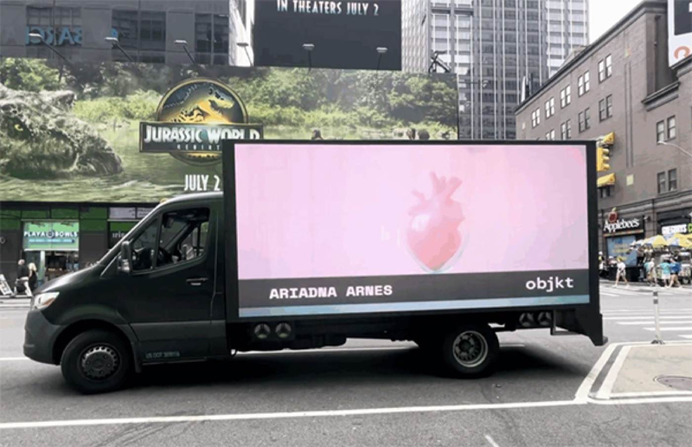
Ariadna Arnés는 NFT.NYC 2025 기간 동안 인공지능으로 제작한 세 작품을 뉴욕의 여러 공간에서 선보였습니다.
이 작품은 사진만으로는 표현하기 어려웠던 내면의 감정과 상상 속 장면을 인공지능을 통해 시각화한 것으로, 브루클린과 세계무역센터의 갤러리를 포함해 맨해튼을 주행하는 디지털 광고 트럭에서도 상영되었습니다.
이 프로젝트는 단순히 전시 범위를 넓힌 것을 넘어, 디지털 환경에서 탄생한 AI 아트를 도시의 실제 공간과 연결했다는 점에서 의미가 있습니다.
미디어아트가 도시를 직접 찾아가는 방법
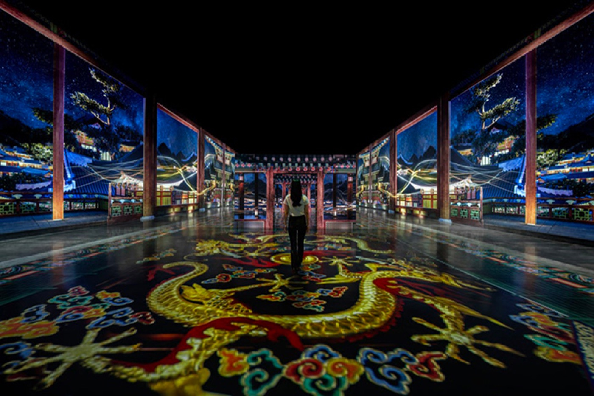
앞서 살펴본 사례들은 LED 트럭을 단순한 송출 화면이 아니라, 작품과 장소를 연결하는 이동형 전시 공간으로 활용했습니다. 작품의 주제와 관련된 지역을 직접 찾아가고, 트럭의 이동 경로까지 전시의 일부로 만든 것입니다. 시티핑크 역시 작품에 맞춰 운행 경로와 정차 장소를 기획하면, 거리와 도로를 새로운 문화 공간으로 확장할 수 있습니다.
여기에 정차 상영이나 QR 콘텐츠, 여러 대의 트럭을 활용한 동시 송출을 더하면 단순한 영상 노출을 넘어 하나의 미디어아트 프로젝트로 발전시킬 수 있습니다.
시티핑크를 활용한 미디어아트 프로젝트에 관심이 있다면 언제든지 애드 addd로 문의주세요. 감사합니다!
addd / marketing
홈페이지 블로그 아티클 기획·작성
회사 홈페이지 블로그에 상품 소개와 업계 트렌드 아티클을 직접 기획하고 작성했습니다. 시티핑크 강남 글은 노선, 시청률 비결, 성과 데이터, 예산까지 광고주가 궁금해할 순서로 풀었고, LED 트럭 미디어아트 글은 해외 사례 5건을 조사해 우리 매체의 새로운 활용법으로 연결했습니다.
- 상품 아티클시티핑크 강남
노선·성과·예산 - 트렌드 아티클해외 미디어아트
사례 5건 조사 - 자사 채널홈페이지에 직접
기획·작성·게시